2.5 Continuity
Limits and Continuity
Let \(f\) be a function defined on some interval \((a,b)\) and \(c \in (a,b)\). We say that \(f\) is continuous at \(c\) if three things happen:
- \(f(c)\) exists
- \(\displaystyle\lim_{x \rightarrow c} f(x)\) exists
- \(\displaystyle\lim_{x \rightarrow c} f(x) = f(c)\).
We will see why each of these properties is necessary to ensure continuity. We define continuity in a more compact version below.
Definition: A function \(f\) is continuous at a point \(c\) if \(\displaystyle\lim_{x \rightarrow c} f(x) = f(c)\).
We say that \(f\) is continuous on an open interval \(I\) if \(f\) is continuous at every point \(c \in I\).
Note that each of the three properties listed in the introduction must occur in order for \(f\) to satisfy the definition of continuity.
Example: Prove that \(f(x) = 3x^2 - 5x + 1\) is continuous at 6.
Solution: We need to determine three things:
- Does \(f(6)\) exist?
- Does \(\displaystyle\lim_{x \rightarrow 6} f(x)\) exist?
- Is \(\displaystyle\lim_{x \rightarrow 6} f(x) = f(6)\)?
First, we know that \(f(6) = 3(6)^2 - 5(6) + 1 = 79\). So, \(f(6)\) exists.
Next, we note that \(f\) is a polynomial and hence we can use the limit laws to evaluate \(\displaystyle\lim_{x \rightarrow 6} f(x)\). \[\begin{align*} \lim_{x \rightarrow 6} f(x) &= \lim_{x \rightarrow 6} 3x^2 - 5x + 1 \\[6pt] &= \lim_{x \rightarrow 6} 3x^2 - \lim_{x \rightarrow 6} 5x + \lim_{x \rightarrow 6} 1 && \mbox{Sum and Difference Laws}\\[6pt] &= 3\lim_{x \rightarrow 6} x^2 - 5\lim_{x \rightarrow 6} x + \lim_{x \rightarrow 6} 1 && \mbox{Constant Coefficient Law}\\[6pt] &= 3\left(\lim_{x \rightarrow 6} x \right)^2 - 5\lim_{x \rightarrow 6} x + \lim_{x \rightarrow 6} 1 && \mbox{Power Law}\\[6pt] &= 3\left(6 \right)^2 - 5(6) + \lim_{x \rightarrow 6} 1 && \mbox{Identity Law}\\[6pt] &= 108 - 30 + 1 && \mbox{Constant Law}\\[6pt] &= 79. \end{align*}\] So, \(\displaystyle\lim_{x \rightarrow 6} f(x)\) exists.\
Finally, since \(\displaystyle\lim_{x \rightarrow 6} f(x) = 79 = f(6)\), the function \(f(x) = 3x^2 - 5x + 1\) is continuous at 6.
Theorem (Continuity of Polynomials): All polynomials are continuous on \(\mathbb{R}\).
Proof: All polynomials have the form \[P(x) = c_n x^n + c_{n-1}x^{n-1} + \cdots + c_1 x + c_0.\] Let \(a \in \mathbb{R}\). Clearly, \(P(a) = c_n a^n + c_{n-1}a^{n-1} + \cdots + c_1 a + c_0\). However, we can also see that \[\begin{align*} \lim_{x \rightarrow a} P(x) &= \lim_{x \rightarrow a} c_n x^n + c_{n-1}x^{n-1} + \cdots + c_1 x + c_0 \\[6pt] &= \lim_{x \rightarrow a} c_n x^n + \lim_{x \rightarrow a} c_{n-1}x^{n-1} + \cdots + \lim_{x \rightarrow a} c_1 x + \lim_{x \rightarrow a} c_0 && \mbox{Sum and Difference Laws}\\[6pt] &= c_n\lim_{x \rightarrow a} x^n + c_{n-1}\lim_{x \rightarrow a} x^{n-1} + \cdots + c_1\lim_{x \rightarrow a} x + \lim_{x \rightarrow a} c_0 && \mbox{Constant Coefficient Law}\\[6pt] &= c_n \left(\lim_{x \rightarrow a} x\right)^n + c_{n-1}\left(\lim_{x \rightarrow a} x\right)^{n-1} + \cdots + c_1\lim_{x \rightarrow a} x + \lim_{x \rightarrow a} c_0 && \mbox{Power Law}\\[6pt] &= c_n \left( a \right)^n + c_{n-1}\left( a \right)^{n-1} + \cdots + c_1(a) + \lim_{x \rightarrow a} c_0 && \mbox{Identity Law}\\[6pt] &= c_n a^n + c_{n-1}a^{n-1} + \cdots + c_1a + c_0 && \mbox{Constant Law,} \end{align*}\] which is exactly \(P(a)\). Hence, \(P(x)\) is continuous on \(\mathbb{R}\) since \(a\) was arbitrarily selected.
Example: Find a value of \(c\) for which the function \(f(x) = \begin{cases} 3x^2 - 1 & x \geq 5\\ 2x + c & x < 5 \end{cases}\) is continuous at 5.
Proof: First, since both pieces of \(f\) are polynomials, we know that \(f\) is continuous on \(\mathbb{R}\) except possibly at 5. Since \(f(5) = 3(5)^2 - 1 = 74\), we need to find a value \(c\) so that \(\displaystyle\lim_{x \rightarrow 5} f(x) = 74\).
Evaluating the right side limit, \[\begin{align*} \lim_{x \rightarrow 5^+} f(x) &= \lim_{x \rightarrow 5^+} 3x^2 - 1 \\ &= 3(5)^2 - 1 && \mbox{since the polynomial is continuous at 5}\\[6pt] &= 74. \end{align*}\]
Evaluating the left side limit, \[\begin{align*} \lim_{x \rightarrow 5^-} f(x) &= \lim_{x \rightarrow 5^-} 2x + c \\ &= 2(5) + c && \mbox{since the polynomial is continuous at 5}\\[6pt] &= 10 + c. \end{align*}\]
For the limit to exist the left limit (74) must be the same as the right limit (\(10 + c\)). Hence, \(74 = 10 + c\) or \(c = 64\). Now, the left limit is the same as the right limit at 5 (both are 74) and the limit is equal to \(f(5)\). Hence, \(c = 64\) ensures that \(f\) is continuous at 5 and therefore on \(\mathbb{R}\).
Practice Problems
- Determine if the given functions are continuous at the given value of \(a\):
\(f(x) = 2x^3 - 5x^2 + 1\) at \(a = 3\)
\(g(x) = -3x^2 + 5x + 2\) at \(a = 1\)
\(f(x) = \sqrt{x - 1} + 5\) at \(a = 10\)
\(f(x) = \left(x^2 - x + 1 \right)^3\) at \(a = -2\)
\(f(x) = \frac{x^2 - x -6}{x-3}\) at \(a = 2\)
\(f(x) = \frac{x^2 - 2x -8}{x-1}\) at \(a = 5\)
- Determine a value \(c\) so that the given functions are continuous at the given value of \(a\):
\(f(x) = \begin{cases} 3x + 2 & x > 3\\ x-c & x \leq 3 \end{cases}\;\;\) at \(a = 3\)
\(g(x) = \begin{cases} x^2 + 2 & x > 1\\ \sqrt{x} - c & x \leq 1 \end{cases}\;\;\) at \(a = 1\)
\(f(x) = \begin{cases} |x - 20| & x \geq 10\\ c\sqrt{x-6} + 2 & x < 10 \end{cases}\;\;\) at \(a = 10\)
\(f(x) = \begin{cases} x^3 + 2x + c & x \not = -2\\ -11 & x = -2 \end{cases}\;\;\) at \(a = -2\)
Types of Discontinuities
Recall that for a function \(f\) to be continuous at \(c\), three things must happen:
- \(f(c)\) exists
- \(\displaystyle\lim_{x \rightarrow c} f(x)\) exists
- \(\displaystyle\lim_{x \rightarrow c} f(x) = f(c)\).
In this section we will show examples where \(f\) fails to have one or more of these properties and what results is a function that is discontinuous.
One way to think about continuity is in terms of drawing a graph. If you can draw the graph of a function without lifting your pen, the function is continuous. The graph below is one where \(f(c)\) does not exist. The missing point at \((1,1)\) causes a discontinuity. Hence, it is important that the function is defined at all points. This type of discontinuity is called a removable discontinuity.
| 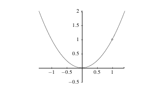 |
|---|
The next two graphs illustrate what may happen if the \(\displaystyle\lim_{x \rightarrow c} f(x)\) does not exist. In the first one, the graph jumps at the point \(x = 1\). This is called a jump discontinuity.
| 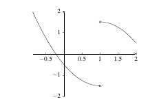 |
|---|
In the second graph, the limit is infinite as \(x\) approaches 1. This type of discontinuity is called an infinite discontinuity.
| 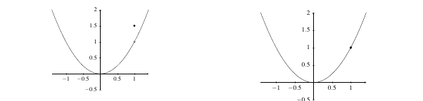 |
|---|
Having the function defined at all points and a limit value at every point is still insufficient for continuity. The graph below is another type of removable discontinuity. In this case, the limit value is different than the function value. Hence, part three of our rules is necessary to ensure that the function value is equal to the limit value.
| 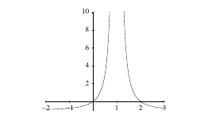 |
|---|
Only when all three properties are satisfied do we get a graph of a continuous function.
The idea of follows in a natural way. The graph below is continuous on \([0, \infty)\). It is continuous at 0 from the right because, rather than taking a two-sided limit, we simply take the limit from the right.
| 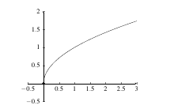 |
|---|
Since continuity is generally a concept for functions on an open interval, we extend the idea to functions on a closed interval by simply restricting the limit requirement to being a one-sided limit for the endpoints. Hence, a function like \(f(x) = \sqrt{x}\) is continuous on \([0,\infty)\) since it is continuous at all points in \((0,\infty)\) and also continuous from the right at 0.
Practice Problems
- Sketch a graph of a function with the following properties: \begin{enumerate}
\(f\) is defined on \([-3,3)\), there is a jump discontinuity at \(x = -2\) and a removable discontinuity at \(x = 0\). The function \(f\) is continuous from the right at \(x = -3\) and \(f(-3) = 5\).
\(f\) is defined on \([-10,8]\), there is a jump discontinuity at \(x = 0\), an infinite discontinuity at \(x = -2\), a removable discontinuity at \(x = 4\) and \(f(4)\) does not exist. The function \(f\) is discontinuous at both endpoints.
\(f\) is defined on \([-5,5]\), there is a jump discontinuity at \(x = -1\), an infinite discontinuity at \(x = -3\), a removable discontinuity at \(x = 2\) and \(f(2) = 1\). The function \(f\) is continuous from the right at \(x = -5\) but is not continuous from the left at \(x = 5\).
- Determine where the given functions are continuous.
\(f(x) = \begin{cases} 3x - 5, & x \not = 1\\ 2, & x = 1 \end{cases}\)
\(f(x) = \begin{cases} x^2 + 2x, & x \leq -2\\ x^3 - 6x, & x > -2 \end{cases}\)
\(f(x) = \frac{x^3 - 8}{x-2}\)
\(f(x) = \begin{cases} 0, & x =0\\ x^3 \sin(1/x) & x \not = 0 \end{cases}\)
Properties of Continuous Functions
Once we know that a function is continuous, we can evaluate limits by simply substituting the limit value into the function. That makes continuity a very powerful property. We already know that all polynomials are continuous.
Example: Determine \(\displaystyle\lim_{x \rightarrow 2} x^3 - 5x + 6\).
Solution: Since \(f(x) = x^3 - 5x + 6\) is a polynomial, it is continuous on \(\mathbb{R}\). Hence, \[\displaystyle\lim_{x \rightarrow 2} f(x) = f(2).\] Since \(f(2) = 2^3 - 5(2) + 6 = 4\), we know that \[\displaystyle\lim_{x \rightarrow 2} x^3 - 5x + 6 = 4.\]
Here we examine some more properties of continuous functions.
Each of these continuity laws is easy to prove and we will prove them later on. An easy result of the continuity laws is that rational functions are continuous on their domains.
Corollary: Any rational function is continuous on its domain.
Example: Determine where \(f(x) = \dfrac{x^2 - 2x - 8}{x-4}\) is continuous and find \(\displaystyle\lim_{x \rightarrow 4} f(x)\).
Solution: From the corollary, we know that \(\dfrac{x^2 - 2x - 8}{x-2}\) is continuous on its domain (property 4). Since \[\dfrac{x^2 - 2x - 8}{x-4} = \dfrac{(x-4)(x+2)}{x-4} = x+2, \;\; \text{when } x \not = 4,\] we know that it is continuous on everywhere except \(x = 4\) which we write as \[domain(f(x)) = \mathbb{R} - \{4\}.\]
Since \(f(x) = \dfrac{x^2 - 2x - 8}{x-4}\) is continuous everywhere except at \(x = 4\), and because \[f(x) = \dfrac{x^2 - 2x - 8}{x-4} = x+2\] at all values of \(x\) other than \(x = 4\), we can evaluate \(\displaystyle\lim_{x \rightarrow 4} \dfrac{x^2 - 2x - 8}{x-4}\) as if we were evaluating \(\displaystyle\lim_{x \rightarrow 4} x+2\) since we know the function acts identically at all values except \(x = 4\) (and a limit never acts at the limit point). Therefore, \[\begin{align*} \lim_{x \rightarrow 4} \dfrac{x^2 - 2x - 8}{x-4} &= \lim_{x \rightarrow 4} \dfrac{(x-4)(x+2)}{x-4}\\ &= \lim_{x \rightarrow 4} x+2 \\ &= 4 + 2\\ &= 6. \end{align*}\]
Example: Determine where \(g(x) = \dfrac{(x-1)(x^2 - 3x - 10)}{x^2 - 4x + 3}\) is continuous and find \(\displaystyle\lim_{x \rightarrow 1} g(x)\).
Solution: From the corollary, we know that \(\dfrac{(x-1)(x^2 - 3x - 10)}{x^2 - 4x + 3}\) is continuous on its domain (property 4). Since \[\dfrac{(x-1)(x^2 - 3x - 10)}{x^2 - 4x + 3} = \dfrac{(x-1)(x+2)(x-5)}{(x-1)(x-3)} = \dfrac{(x+2)(x-5)}{(x-3)}, \;\; \text{when } x \not = 1,\] we know that it is continuous on everywhere except \(x = 1\) and \(x = 3\) which we write as \[domain(g(x)) = \mathbb{R} - \{1,3\}.\]
Since \(g(x) = \dfrac{(x-1)(x^2 - 3x - 10)}{x^2 - 4x + 3}\) is continuous everywhere except at \(x = 1\) and \(3\), and because \(g(x) = \dfrac{(x+2)(x-5)}{(x-3)}\) at all values of \(x\) other than \(x = 1\) and \(3\), we can evaluate \(\displaystyle\lim_{x \rightarrow 1} g(x)\) as if we were evaluating \(\displaystyle\lim_{x \rightarrow 1} \dfrac{(x+2)(x-5)}{(x-3)}\) since we know the function acts identically at all values except \(x = 1\) and is undefined at 3 (and a limit never acts at the limit point). Therefore, \[\begin{align*} \lim_{x \rightarrow 1} \dfrac{(x-1)(x^2 - 3x - 10)}{x^2 - 4x + 3} &= \lim_{x \rightarrow 1} \dfrac{(x-1)(x+2)(x-5)}{(x-1)(x-3)}\\ &= \lim_{x \rightarrow 1} \dfrac{(x+2)(x-5)}{(x-3)} \\ &= \dfrac{(1+2)(1-5)}{(1-3)}\\ &= \dfrac{(3)(-4)}{-2}\\ &= 6. \end{align*}\]
Another property that is easy to prove involves continuity for roots.
Theorem: If \(n \in \mathbb{Z}^+\) and is even, then \(f(x) = \sqrt[n]{x}\) is continuous on \([0,\infty)\). If \(n \in \mathbb{Z}^+\) is odd, then \(f\) is continuous on \((-\infty, \infty)\).
Example: Determine where \(f(x) = x - \sqrt{x-2}\) is continuous.
Solution: The function \(f\) is the difference of two functions \(x\) and \(\sqrt{x-2}\). The domain of \(x\) is \(\mathbb{R}\) while the domain of \(\sqrt{x-2}\) is \(x-2 \geq 0\) or \(x \geq 2\). Therefore, \(f\) is continuous on its domain \(D = \{x | x \geq 2\}\).
We note that in the previous example we had a difference of functions. The first function \(g(x) = x\) was continuous on \(\mathbb{R}\) while the second function \(h(x) = \sqrt{x-2}\) was continuous for \(x \geq 2\). The function \(f(x) = x - \sqrt{x} = g(x) - h(x)\) (the difference between \(g\) and \(h\)) is continuous where \(g\) and \(h\) are continuous.
Theorem: Let \(f\) and \(g\) be continuous on intervals \(I_1\) and \(I_2\) respectively. Suppose that \(g(x) \not = 0\) on \(I_3\). Then
- the domain of \(cf(x)\) is \(I_1\),
- the domain of \(f(x) \pm g(x)\) is \(I_1 \cap I_2\),
- the domain of \(f(x) \cdot g(x)\) is \(I_1 \cap I_2\),
- the domain of \(f(x)/ g(x)\) is \((I_1 \cap I_2) \cap I_3\),
where \(A \cap B\) indicates the values common to both intervals \(A\) and \(B\).
Example: Determine where \(f(x) = \dfrac{\sqrt[4]{x+3}}{x-5}\) is continuous.
Solution: The function \(f\) is the quotient of two functions \(\sqrt[4]{x+3}\) and \(x-5\). The domain of \(\sqrt[4]{x+3}\) is \(x+3 \geq 0\) or \(x \geq -3\) (from Theorem \(\ref{thm:ContinuousRootTheorem}\)) while the domain of \(x-5\) is \(\mathbb{R}\). We also note that \(x-5 = 0\) when \(x = 5\). Therefore, in this example, \(I_1 = \{x|x \geq -3\}\), \(I_2 = \mathbb{R}\) and \(I_3 = \mathbb{R}-\{5\}\). We know \(f\) is continuous on \[\begin{align*} (I_1 \cap I_2) \cap I_3 &= \left(\{x | x \geq -3\} \cap \mathbb{R} \right) \cap \left(\mathbb{R} - \{5\} \right)\\ &= \{x | x \geq -3\} \cap \left(\mathbb{R} - \{5\} \right)\\ &= \{x | x \geq -3, x \not = 5\}, \end{align*}\] which we can rewrite as \([-3,5) \cup (5,\infty)\).
Practice Problems
Determine where the given functions are continuous.
\(f(x) = x^2 - 5x + 100\)
\(f(x) = \dfrac{1}{x^2 - 10x + 25}\)
\(f(x) = \dfrac{x^3}{x^2 + x -6}\)
\(f(x) = \sqrt[3]{x}\)
\(f(x) = 2x^3 - \sqrt[3](x)\)
\(f(x) = \sqrt{x - 3}\)
\(f(x) = x\sqrt{x - 5}\)
\(f(x) = \sqrt{x} + \sqrt{3-x}\)
\(f(x) = \sqrt[3]{x-5} + \sqrt[4]{x+3}\)
\(f(x) = \dfrac{\sqrt{x + 3}}{\sqrt{10 - x}}\)
Proof of Continuity Laws
In this section, we prove the continuity laws.
Theorem: Let \(f\) be continuous on an open interval \(I\) and \(c \in \mathbb{R}\). Then \(cf(x)\) is continuous.
Proof: Let \(f\) be continuous on an open interval \(I\) and let \(a \in I\). Then \[\lim_{x \rightarrow a} f(x) = f(a).\] We need to show that \[\lim_{x \rightarrow a} cf(x) = cf(a).\] Since \(f\) is continuous at \(a\), we know \[\begin{align*} \lim_{x \rightarrow a} cf(x) &= c\lim_{x \rightarrow a} f(x)\\ &= cf(a). \end{align*}\] Therefore, since \[\lim_{x \rightarrow a} cf(x) = cf(a),\] we know that \(cf(x)\) is
Theorem: Let \(f\) and \(g\) be continuous on an open interval \(I\). Then \(f(x) \pm g(x)\) is continuous.
Proof: Let \(f\) and \(g\) be continuous and \(a \in I\). We need to show that \[\displaystyle\lim_{x \rightarrow a} f(x) + g(x) = f(a) + g(a).\]
Since we know that \(f\) and \(g\) are continuous on \(I\), we know that \[\lim_{x \rightarrow a} f(x) = f(a) \;\;\; \text{and} \;\;\; \lim_{x \rightarrow a} g(x) = g(a).\] Therefore, we have \[\begin{align*} \lim_{x \rightarrow a} f(x) + g(x) &= \lim_{x \rightarrow a} f(x) + \lim_{x \rightarrow a} g(x) && \mbox{Sum Rule for limits}\\[6pt] &= f(a) + g(a). \end{align*}\] Therefore, the function \(f+g\) is continuous.
Theorem: Let \(f\) and \(g\) be continuous on an open interval \(I\). Then \(f(x)g(x)\) is continuous.
Proof: Using limit laws (the Multiplication Law), we know that if \[\lim_{x \rightarrow a} f(x) = f(a) = L,\] and if \[\lim_{x \rightarrow a} g(x) = g(a) = M,\] then \[\lim_{x \rightarrow a} f(x)g(x) = LM = f(a)g(a),\] and hence the
Theorem: Let \(f\) and \(g\) be continuous on an open interval \(I\). Then \(f(x) / g(x)\) is continuous if \(g(x) \not = 0\) for \(x \in I\).
Proof: Using limit laws (the Division Law), we know that if \[\lim_{x \rightarrow a} f(x) = f(a) = L,\] and if \[\lim_{x \rightarrow a} g(x) = g(a) = M \not = 0,\] then \[\lim_{x \rightarrow a} \dfrac{f(x)}{g(x)} = \dfrac{L}{M} = \dfrac{f(a)}{g(a)},\] with \(g(a) \not = 0\) and hence the quotient of continuous functions is continuous.
Corollary: Any rational function is continuous on its domain.
Proof: All rational functions have the form \[f(x) = \dfrac{P(x)}{Q(x)},\] with \(P\) and \(Q\) both polynomials. Furthermore, the domain of \(f\) is given by \[D = \{x | x \in \mathbb{R}, Q(x) \not = 0\}.\] Since \(P\) and \(Q\) are continuous everywhere, property 4 of the continuity laws guarantees that \(f\) is continuous for all \(x \in D\).
We now prove that roots are continuous on their domains.
Theorem (Inversion Theorem): If \(f\) is continuous and one-to-one on an interval \(I\), then \(f^{-1}\) is also continuous.
Proof: A continuous function on an interval must be strictly monotonic as if it were not, there would be numbers \(a,b\) and \(c\) on the interval with \(a < b < c\) such that \(f(b)\) did not lie between \(f(a)\) and \(f(c)\). If \(f(a)\) was between \(f(b)\) and \(f(c)\), then the IVT guarantees a value \(x \in (b,c)\) such that \(f(x) = f(a)\) (a contradiction to \(f\) being one-to-one. The only other possibility is that \(f(c)\) was between \(f(a)\) and \(f(b)\) which is similar. Therefore, \(f\) must be monotonic.
WLOG, assume \(f\) is strictly increasing (the monotonically decreasing case is identical). Let \(x_0\) be in \(I\) with \(y_0 = f(x_0)\). It stands to show that \(\displaystyle\lim_{y \rightarrow y_0}f^{-1}(y) = x_0\).
Let \(\varepsilon > 0\) be given. Since \(x_0 - \varepsilon < x_0 < x_0 + \varepsilon\), we know that \(f(x_0- \varepsilon) < f(x_0) < f(x_0 + \varepsilon)\). Select \[\delta = \min(f(x_0) - f(x_0 - \varepsilon), f(x_0 + \varepsilon) - f(x_0)).\] Then \(f(x_0 + \varepsilon) < f(x_0) - \delta\) and \(f(x_0) + \delta < f(x_0 + \varepsilon)\). That means that if \(f(x_0) - \delta < y < f(x_0) + \delta\), then \(f(x_0 - \varepsilon) < y < f(x_0 + \varepsilon)\). Since \(f\) is strictly increasing, so too if \(f^{-1}\) and therefore \(x_0 - \varepsilon < f^{-1}(y) < x_0 + \varepsilon\). So, we have \[|f^{-1}(y) - f^{-1}(y_0)| < \varepsilon,\] provided \(|y-y_0| < \delta\), as required.
Theorem: If \(n \in \mathbb{Z}^+\) and is even, then \(f(x) = \sqrt[n]{x}\) is continuous on \([0,\infty)\). If \(n \in \mathbb{Z}^+\) is odd, then \(f\) is continuous on \((-\infty, \infty)\).
Proof: Let \(f(x) = x^n\). Then \(f\) is monotonic on \([0,\infty)\) if \(n\) is even and \((-\infty,\infty)\) if \(n\) is odd. Hence, the result follows from the Inversion Theorem by noting that \(g(x) = \sqrt[n]{x}\) is the inverse of \(f\).
Practice Problems
Find the inverse of \(f(x) = x^5\) and sketch both \(f\) and \(f^{-1}\).
The volume of water in a bottle is a function of the height \(H\) of the water. For example, \(V = f(H)\). Similarly, the height of water is a function of the volume of water in the bottle. For example, \(H = g(V)\). Show that \(f\) and \(g\) are inverse functions.
Are there functions \(f(x) = x^n\) which are their own inverse function? Which one(s)?
Prove that the sum of two increasing functions is increasing.
Show that the inverse of an increasing function is increasing. What is the analogy for a decreasing function?
Suppose \(f\) is increasing. Is \(f \circ f\) increasing? If \(f\) is decreasing is \(f \circ f\) decreasing.
The Intermediate Value Theorem
Suppose we have a continuous function \(f\) which is defined on the interval \([a,b]\). If we know that \(f(a) < f(b)\), then for any value \(N \in (f(a), f(b))\), there is at least one value \(c \in (a,b)\) for which \(f(c) = N\). The continuity of \(f\) in the diagram below makes that fact clear.
| 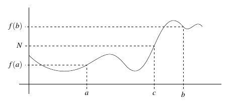 |
|---|
We generalize the intermediate value theorem below.
Theorem (Intermediate Value Theorem): Let \(f\) be a continuous function on \([a,b]\). If \(f(a) \not = f(b)\), then for any number \(N\) between \(f(a)\) and \(f(b)\), there is a value \(c \in (a,b)\) such that \(f(c) = N\).
Example: Let \(f(x) = \sqrt{x} - x + x^4\). Show that there is a value \(c\) so that\ \(f(c) = 0.721\).
Solution: First, we note that \(f\) is the sum of continuous functions on \(\mathbb{R}\), so \(f\) is continuous. Next, we note that \(f(0) = 0\) and that \(f(1) = 1\). Thus, by the intermediate value theorem, there must be a value \(c \in (0,1)\) so that \(f(c) = 0.721\).
We note here that the intermediate value theorem does not specify the value of \(c\); but rather, it guarantees the existence of such a number. Proofs and arguments of this type are called existence proofs.
Corollary (Bolzano’s Theorem): Suppose \(f\) is a continuous function on \([a,b]\) and suppose that \(f(a)\) and \(f(b)\) have opposite signs. There exists a number \(c \in [a,b]\) for which \(f(c) = 0\).
| 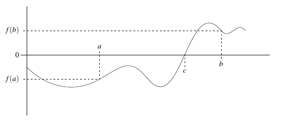 |
|---|
Example: Suppose \(f(x) = x^3 - x - 1\). Show that there is a value \(N \in \mathbb{R}\) for which \(f(N) = 0\).
Solution: We note that \(f\) is a polynomial and so \(f\) is continuous. We also note that \(f(0)= -1\) while \(f(2) = 5\). So, \(f(0)\) and \(f(2)\) have opposite signs. Therefore, there is a value \(c \in [0,2]\) for which \(f(c) = 0\).
Again, we note that Bolzano’s theorem does not tell us the exact value of \(c\) but rather proves its existence and shows where we might look for it. In this case, \(c \in [0,2]\). (Actually, \(c \approx 1.3247\)).
| 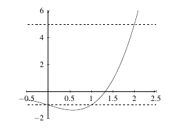 |
|---|
Practice Problems
- For each function below and given \(N\), prove that there is a value \(c\) for which \(f(c) = N\):
- \(f(x) = 3x^3 - 5\), \(N = 1.49\)
- \(f(x) = \sqrt{x - 5} - x^2\), \(N = -10\)
- \(f(x) = \sqrt[3]{x} - x + x^2\), \(N = 5\)
- \(f(x) = \dfrac{x}{(x-3)(x-2)}\), \(N = 4.5\)
- Use Bolzano’s Theorem to show each of the following functions have a zero:
- \(g(x) = \dfrac{x^3 - x + 7}{\sqrt{x^2 - 5}}\)
- \(g(x) = |x| - x^4 + x^2 - 3\)
- \(g(x) = \sqrt{x^3 + 5} - 1 + x\)
- \(g(x) = \sqrt{\dfrac{1}{x}} - 4\)
Proof of The IVT
Theorem (Intermediate Value Theorem): Let \(f\) be a continuous function on \([a,b]\). If \(f(a) \not = f(b)\), then for any number \(c\) between \(f(a)\) and \(f(b)\), there is a value \(x \in (a,b)\) such that \(f(x) = c\).
We note here that the intermediate value theorem does not specify the value of \(c\); but rather, it guarantees the existence of such a number.
| 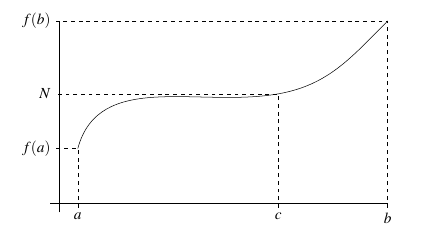 |
|---|
The proof of the intermediate value theorem takes advantage of the completeness axiom. An axiom is a statement that is assumed to be true without proof. To understand the completeness axiom, we need to know something about upper bounds. A real number \(x\) is called a least upper bound for a set \(S\) if:
- The number \(x\) is an upper bound for the set \(S\). That is, if \(s \in S\), then \(s \leq x\).
- If \(y\) is any other upper bound for the set \(S\), then \(x \leq y\).
We note that there is no requirement that \(x\) is a member of \(S\).
Theorem (Completeness Axiom): If \(S\) is a non-empty set of real numbers that is bounded above, then there exists exactly one real number that is the least upper bound of \(S\).
Example: Consider the set \(S = \{1 - 1/x | x \in \mathbb{Z}^+ \}\). We can write out some of the values in \(S\): \[S = \{0, 1/2, 2/3, 3/4, 4/5, 5/6, 6/7, \ldots \}.\] First, we see that \(S\) is non-empty. Also, notice that there is no value of \(S\) that exceeds 1. So, \(S\) is bounded above by 1. The completeness axiom guarantees that \(S\) has a least upper bound. Since 1 is the smallest of all values that are larger than those in \(S\), 1 is the least upper bound for \(S\).
Proof (of the Intermediate Value Theorem): We prove the first case, \(f(a)<u<f(b)\). The second case (where \(f(a) > u > f(b)\)) is similar and left as an exercise.
Let \(S\) be the set of all \(x\in [a,b]\) such that \(f(x)\leq u\). Then \(S\) is non-empty since \(a \in S\), and \(S\) is bounded above by \(b\). Hence, by completeness, \(S\) has a least upper bound, \(c\). That is, \(c\) is the lowest number that is greater than or equal to every member of \(S\). We claim (and will subsequently prove) that \(f(c)=u\).
Let \(\varepsilon > 0\) be given. Since \(f\) is continuous, there is a \(\delta >0\) such that \(|f(x)-f(c)| < \varepsilon\) whenever \(|x-c|<\delta\). Thus, \[f(x)-\varepsilon <f(c)<f(x)+\varepsilon,\] whenever $ x (c-,c+)$. By the completeness axiom, there exist \(a^{*}\in (c-\delta ,c]\) that is contained in \(S\), so that for that \(a^{*}\) \[f(c)<f(a^{*})+\varepsilon \leq u+\varepsilon.\] Choose \(a^{**}\in [c,c+\delta )\) that will obviously not be contained in \(S\), so we have \[f(c)>f(a^{**})-\varepsilon \geq u-\varepsilon.\] Both inequalities \(u-\varepsilon <f(c)<u+\varepsilon,\) hold for all \(\varepsilon > 0\). Therefore, we deduce \(f(c)=u\) as the only possible value, as claimed.
Theorem (Bolzano’s Theorem): Suppose \(f\) is a continuous function on \([a,b]\) and suppose that \(f(a)\) and \(f(b)\) have opposite signs. There exists a number \(c \in [a,b]\) for which \(f(c) = 0\).
Practice Problems
Finish the proof of the intermediate value theorem by showing the second case where \(f(a) > u > f(b)\).
Prove Bolzano’s theorem.
Show that there is a number \(a\) that is one more than it’s cube.
Show that it is necessary that \(f\) is continuous for the intermediate value theorem to hold.
Show that \(f(x) = x^5 - 4x^3 - 1\) has at least 2 real solutions by applying Bolzano’s theorem to two different intervals.
A climber leaves base-camp at 8AM and climbs to the top of a hill arriving at 8PM. He remains there until the next day when, at 8AM he climbs back down the hill along the same path arriving back at the base-camp at 8PM. Prove that there is a spot on the path that the climber passes at the same time both days.
Let \(f:[0,1] \rightarrow [0,1]\) be continuous. Show that there exists and \(a \in [0,1]\) such that \(f(a) = a\).
Continuity of Trigonometric Functions
When we look at the graphs of \(y = \sin x\) and \(y = \cos x\), we would suspect that both of those functions are continuous. If these two functions are continuous (and they are), we can show that \(\tan x = \frac{\sin x}{\cos x}\) is also continuous at all real numbers except where \(\cos x = 0\).
| 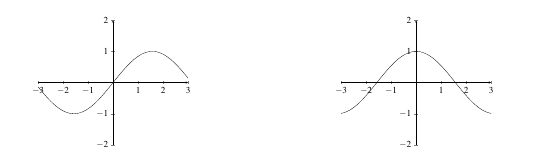 |
|---|
In fact, it turns out that the inverse function of any continuous function is also continuous. With these facts in mind, we provide the following theorem.
Lemma: The sine and cosine functions are continuous at 0. That is, \[\displaystyle\lim_{\theta \rightarrow 0} \sin(\theta) = 0 \;\;\; \text{ and } \;\;\; \displaystyle\lim_{\theta \rightarrow 0} \cos(\theta) = 1.\]
Proof: Consider the portion of the unit circle in Figure \(\ref{SineXIsLessThanX}\) with radius \(AB = 1\). We begin by noting that \(-\theta \leq \sin \theta \leq \theta\).
| 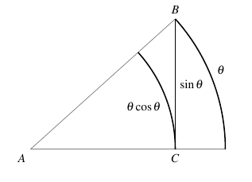 |
|---|
The length of the line segment \(CB\) corresponds to \(\sin \theta\) (by definition). The length of the arc is \(\theta\). Since \(CB\) is shorter than the arc of length \(\theta\), we know that \(\sin \theta \leq \theta\). A similar calculation below the axis shows that \(-\theta \leq \sin \theta\). So, \(-\theta \leq \sin \theta \leq \theta\). Since \[\lim_{\theta \rightarrow 0} -\theta = 0 = \lim_{\theta \rightarrow 0} \theta = 0,\] we have \(\displaystyle\lim_{\theta \rightarrow 0} \sin \theta = 0\). So the sine function is continuous at 0.
To show that \(\displaystyle\lim_{\theta \rightarrow 0} \cos \theta = \cos 0\), we note that \[\begin{align*} \lim_{\theta \rightarrow 0} \cos(\theta) &= \lim_{\theta \rightarrow 0} 1 - 2\sin^2(\theta/2)\\ &= 1 - 2 \lim_{\theta \rightarrow 0}\sin(\theta/2)\lim_{\theta \rightarrow 0}\sin(\theta/2)\\ &= 1. \end{align*}\] Therefore, both sine and cosine are continuous at 1.
Theorem: All trigonometric functions and inverse trigonometric functions are continuous on their domains.
Proof: We show that \(\sin(x)\) and \(\cos(x)\) are continuous everywhere. The continuity of the other trigonometric functions follows from continuity laws. The continuity of inverse trigonometric functions follows from Theorem \(\ref{InversionTheorem}\).
Observe that \[\begin{align*} \lim_{\theta \rightarrow \theta_0} \sin(\theta) &= \lim_{\alpha \rightarrow 0} \sin(\alpha + \theta_0)\\ &= \lim_{\alpha \rightarrow 0} \sin(\alpha)\cos(\theta_0) + \cos(\alpha)\sin(\theta_0)\\ &= \lim_{\alpha \rightarrow 0} \sin(\alpha)\cos(\theta_0) + \lim_{\alpha \rightarrow 0} \cos(\alpha)\sin(\theta_0)\\ &= \cos(\theta_0)\lim_{\alpha \rightarrow 0} \sin(\alpha) + \sin(\theta_0)\lim_{\alpha \rightarrow 0} \cos(\alpha)\\ &= \sin(\theta_0). \end{align*}\]
Next, notice that \[\begin{align*} \lim_{\theta \rightarrow \theta_0} \cos(\theta) &= \lim_{\alpha \rightarrow 0} \cos(\alpha + \theta_0)\\ &= \lim_{\alpha \rightarrow 0} \cos(\alpha + \theta_0)\\ &= \lim_{\alpha \rightarrow 0} \cos(\alpha)\cos(\theta_0) - \sin(\alpha)\sin(\theta_0)\\ &= \lim_{\alpha \rightarrow 0} \cos(\alpha)\cos(\theta_0) - \lim_{\alpha \rightarrow 0}\sin(\alpha)\sin(\theta_0)\\ &= \cos(\theta_0)\lim_{\alpha \rightarrow 0} \cos(\alpha) - \sin(\theta_0)\lim_{\alpha \rightarrow 0}\sin(\alpha)\\ &= \cos(\theta_0). \end{align*}\] Therefore, sine and cosine are continuous on \(\mathbb{R}\) and the theorem follows.
Example: Determine the value of \(\displaystyle\lim_{x \rightarrow 0} 1 + 2\sin x\) and \(\displaystyle\lim_{x \rightarrow \pi} 4-\cos x\).
Solution: Since all trigonometric functions are continuous, we know \[\displaystyle\lim_{x \rightarrow 0} 1 + 2\sin x = 1 + 2\sin(0) = 1\] and \[\displaystyle\lim_{x \rightarrow 0} 4-\cos x = 4-\cos(0) = 3.\]
We note here that both the exponential function \(y = a^x\) and its inverse \(y = \log_a(x)\) are both also continuous on their domains.
Theorem: Exponential and logarithmic functions are continuous on their domains.
| 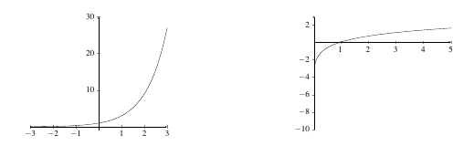 |
|---|
Proof: It is enough to show that \(a^x\) is continuous. The fact that logarithms are continuous follows by Theorem \(\ref{InversionTheorem}\) since logs are the inverse of exponential functions.
Let \(\varepsilon > 0\) be given, \(c \in \mathbb{R}\), \(a > 1\) and take \(|x-c| < \delta = \log_a(1 + \varepsilon a^{-c})\). We need to show that \(|a^x - a^c| < \varepsilon\). If \(x \geq c\), we know that \[x-c < \delta \Leftrightarrow x < c+\delta \Leftrightarrow a^x < a^{c+\delta}.\] So, \[0 \leq a^x-a^c < a^c(a^{\delta}-1) < a^c(a^{\log_a(1+\varepsilon a^{-c})}-1) = \varepsilon.\] A similar argument works if \(x \leq c\). So \(a^x\) is continuous if \(a > 1\).
The same argument (with signs reversed) works if \(a < 1\). Finally, if \(a = 1\), we no longer have an exponential function but rather a linear function which we know is continuous.
Therefore, logarithmic and exponential functions are continuous on their domains.
Example: Determine where \(f(x) = \dfrac{\ln(x) + \sin(x)}{x^3 + 1}\) is continuous.
Solution: We know that \(f\) is continuous on its domain since it is the sum and quotient of continuous functions. The domain of \(\sin x\) is \(\mathbb{R}\). The domain of \(\ln(x)\) is \((0,\infty)\) and the denominator \(x^3 + 1 = (x+1)(x^2 - x + 1)\) is non-zero except when \(x = -1\). Therefore, the domain of \(f\) is \((0,\infty)\).
Example: Determine where \(f(x) = \cos(x^3)\) and \(g(x) = \ln(1 + \sin(x))\) are continuous.
Solution: Since all trigonometric functions are continuous, we know that \(f(x) = \cos(x^3)\) is continuous on \(\mathbb{R}\) since it is the composition of two functions that are both continuous on \(\mathbb{R}\).
For the function \(g(x) = \ln(1 + \sin(x))\), we need to determine when \(1 + \sin(x) > 0\) since the domain of logarithmic functions is \((0,\infty)\). We know that \(1 + \sin(x) > 0\) except when \(\sin(x) = -1\). The function \(\sin(x)\) takes the value of -1 at \(3\pi/2\) and every multiple of \(2\pi\) before and after. Therefore, \(g(x)\) is continuous except when \(x = 3\pi/2 + 2k\pi\) with \(k \in \mathbb{Z}\).
Practice Problems
- For each function below, determine where they are continuous.
- \(y = \sin(x)\)
- \(y = \cos(x)\)
- \(y = \tan(x)\)
- \(y = \csc(x)\)
- \(y = \sec(x)\)
- \(y = \cot(x)\)
- \(y = \arcsin(x)\)
- \(y = \arccos(x)\)
- \(y = \arctan(x)\)
- \(y = \ln(x)\)
- \(y = e^x\)
- For each function below, determine where they are continuous.
- \(f(x) = \sqrt{\sin(x)}\)
- \(f(x) = \tan(x) + \sec(x)\)
- \(f(x) = \cos(\ln(x))\)
- \(f(x) = e^{\sin(x)}\)
- \(f(x) = \sqrt[3]{\tan(x)}\)
- \(f(x) = \tan(x) - \ln(x)\)
- \(f(x) = \sin(\tan(x))\)
- \(f(x) = e^{\ln(x)}\)
- Finish the proof of Theorem \(\ref{thm:LogsandExponentialsAreCts}\) by (a) completing the details of the argument for \(x \leq c\) and \(a > 1\), (b) completing the details of the argument for \(a < 1\) and (c) showing that logarithms are continuous.